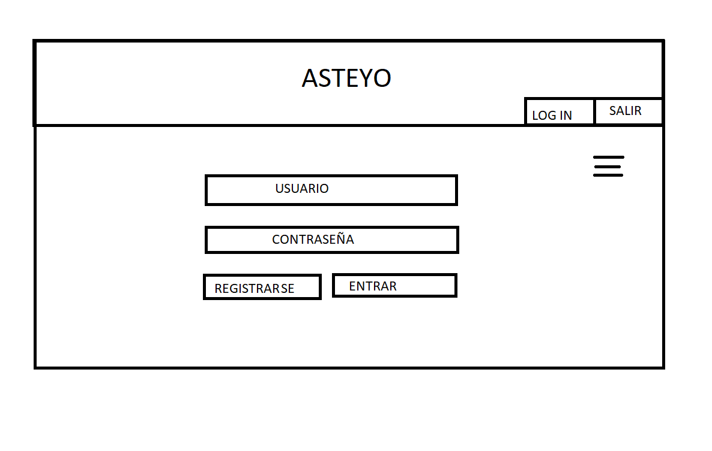
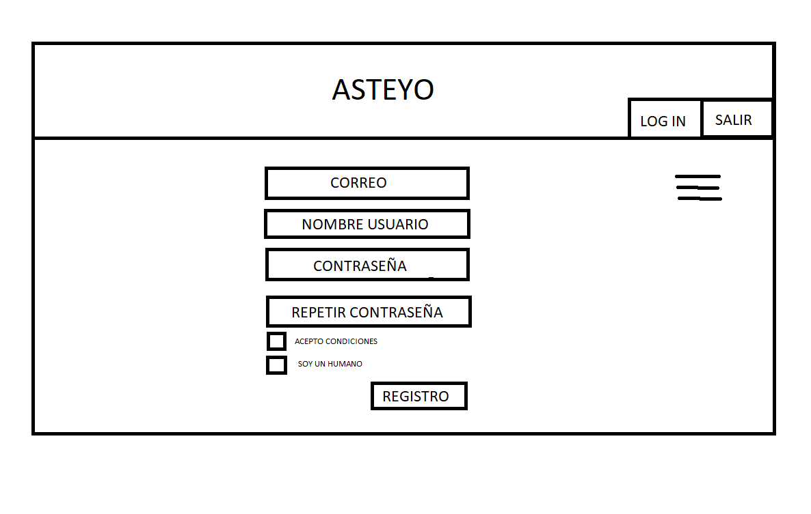
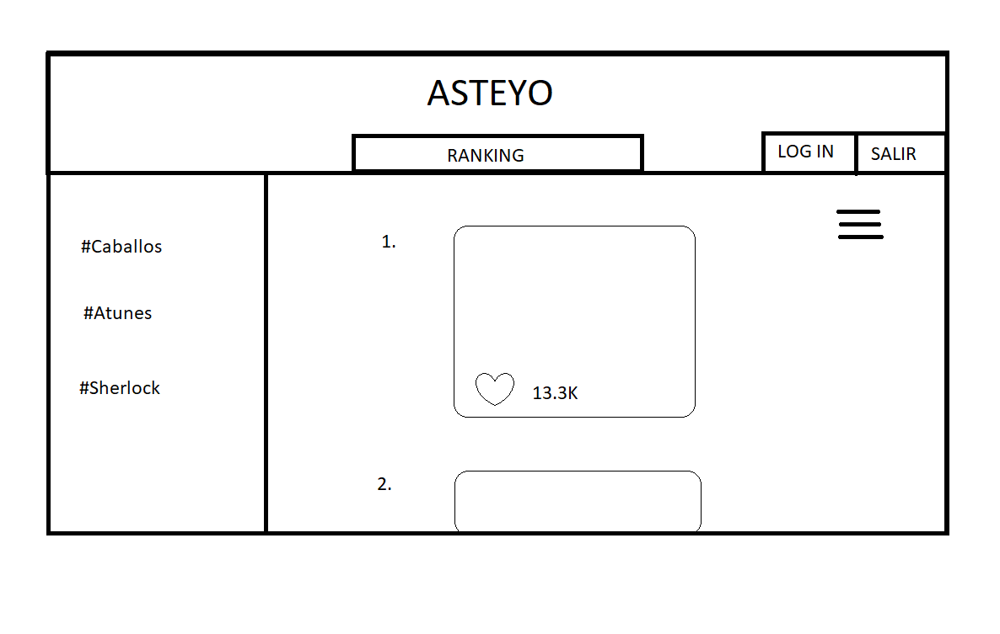
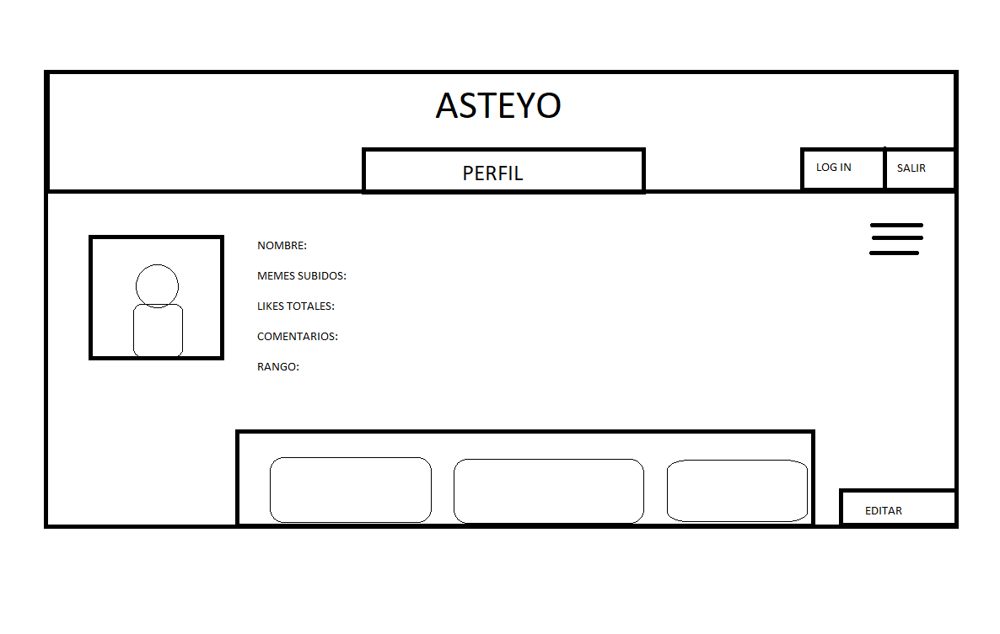
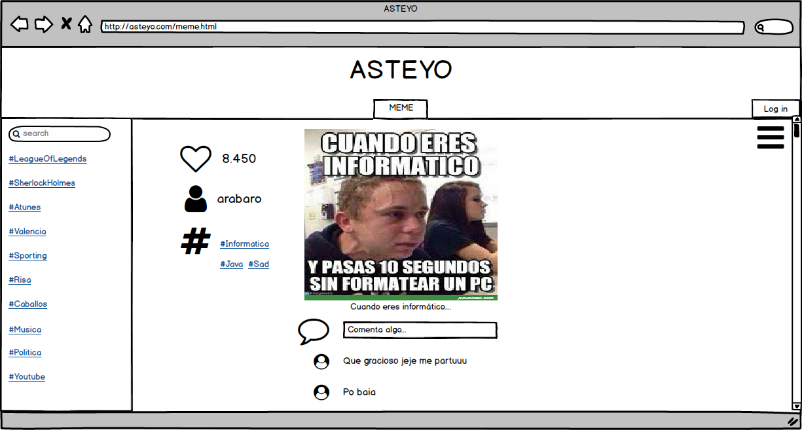

En la cabecera sale el nombre de la página, una opción para hacer log in y otra para salir. Esta cabecera estará visible durante toda la navegación de la página. En la parte izquierda tendremos un buscador y una caja con varias etiquetas disponibles. En la parte central veremos los memes publicados, por defecto se cargarán los últimos subidos. En la parte derecha, tendremos un desplegable a través de un menú burguer, con opciones para visualizar tu perfil, un ranking o volver a los últimos publicados.
En la pantalla de login vemos un panel para insertar el nombre y otro para la contraseña, en caso de no tener cuenta se puede clickar en registrarse para crear una nueva.
Tiene campos para rellenar con el correo, nombre de usuario, contraseña, repetirla y dos checkbox para aceptar las condiciones y decir que no eres un robot.
Vemos un enumerado con los Memes ordenados por número de likes para poder ver los que más likes tienen.
Hay foto de perfil e información del usuario con todas las publicaciones relacionadas con ese usuario.
Podemos observar la franja de la izquierda con hashtags aleatorios en el momento y a la derecha un menú desplegable, en el centro tendríamos el meme con la persona que lo ha subido y un botón para comentar, aparte de un corazón para dar like. Por último se podrá reportar los comentarios y responder a los comentarios. Hay un bocadillo al lado de login, ésto es para ver las notificaciones relacionadas con nuestras publicaciones y solo aparececerán al estar logeados.